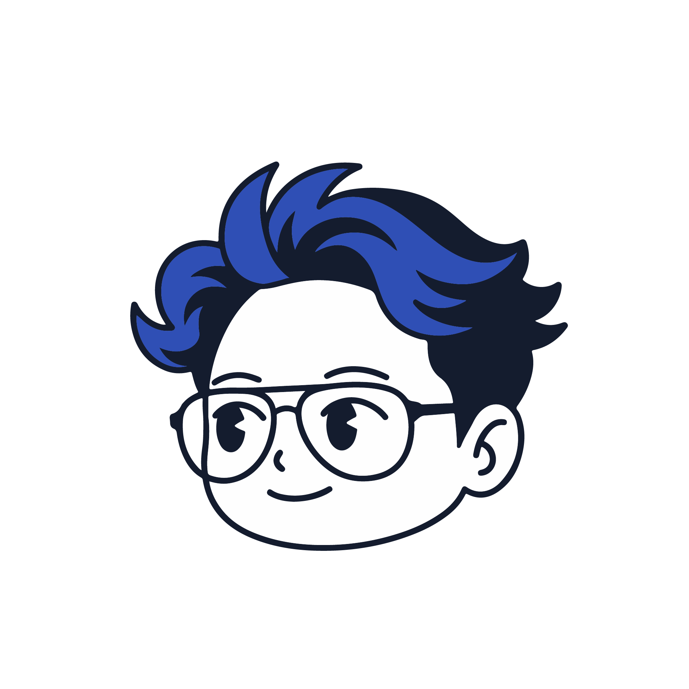
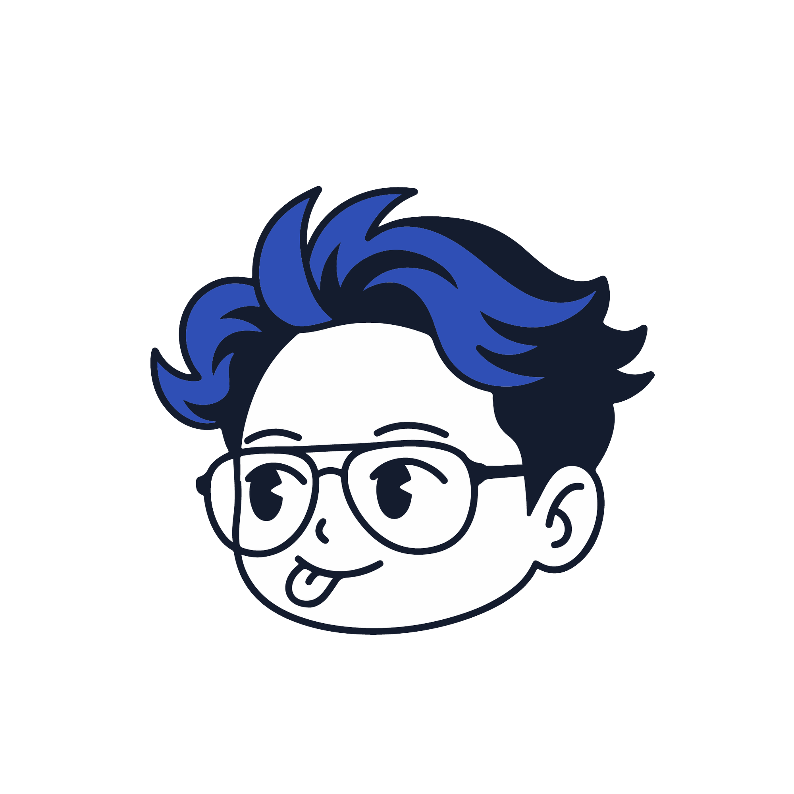
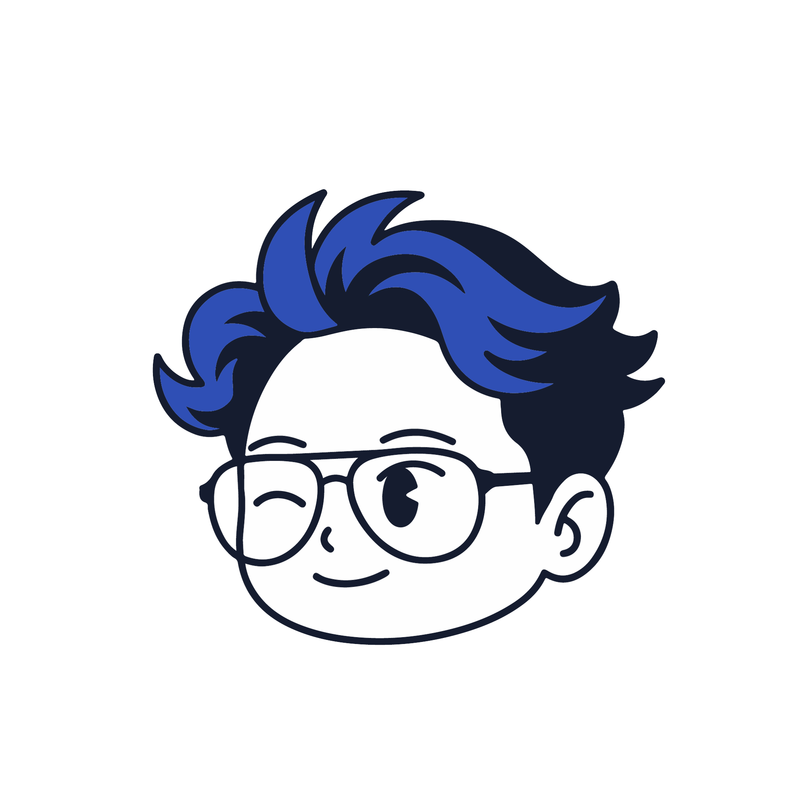

01Logos
Distinctive logo systems and brand marks — built for clarity, character, and instant recognition.



Film — grain, natural light, and random moments & memories caught on 35mm.
Digital captures — client stories and unscripted frames from the street.
Distinctive logo systems and brand marks — built for clarity, character, and instant recognition.
Scroll-stopping social content — post series, campaigns, and templates that keep a brand consistent and alive.


Designer & photographer — chasing light & honest moments.


© 2026 Ahmad Naffi Firdaus